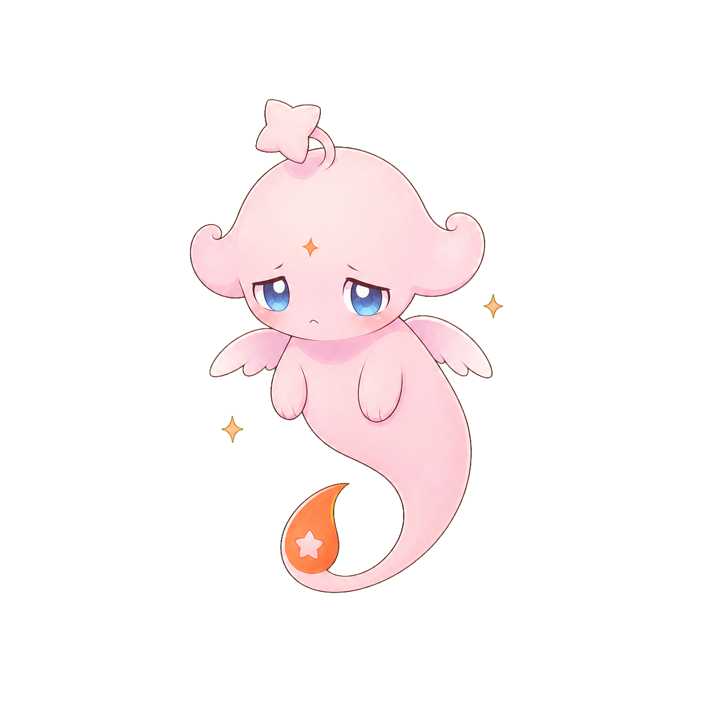
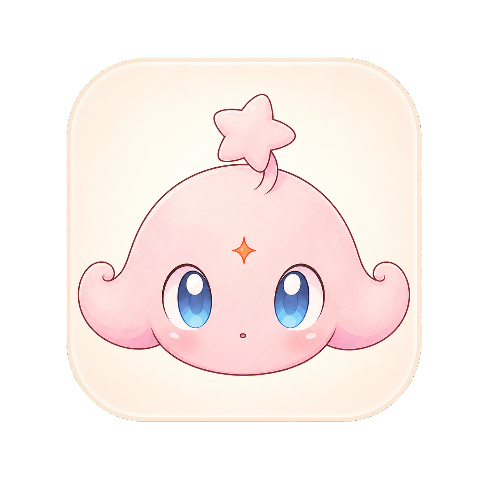

Claude 任务管理器 · 新功能线稿 v3
低保真布局 + 真实 IP 插画「小梦」· 首页 → 项目对话 → 任务流转 → 审批抽屉 → 灵动岛
① APP IP 形象 —「小梦 / MENG」
形象 · 主视觉
小梦 · MENG
漂浮的梦幻精灵 = 在「云端守望」你的项目；尾尖的橘色火花 = Claude 的灵感与它的专属标识。状态变了就换张脸。
表情 · 随任务状态切换

运行中

需审批

已完成

出错 / 离线

App 图标
真实插画版「小梦」已就位：粉嫩漂浮、星星头饰、蓝色大眼、橘色火花尾巴。同一角色 + 表情变化复用于卡片头像、聊天气泡、审批抽屉、灵动岛、锁屏与推送图标。
② 首页 · 全部 Claude Code 项目 + 状态
A · 统一列表（按时间）
B · 按状态分组（优先级）
两种首页：
A 按时间扫全部，需审批卡片用赭石左边框 + 小梦头像置顶。
B 按「需不需要你处理」分组，最焦虑的事永远在最上面。
A 按时间扫全部，需审批卡片用赭石左边框 + 小梦头像置顶。
B 按「需不需要你处理」分组，最焦虑的事永远在最上面。
③ 项目详情 · 对话记录 + 任务状态流转
A · 顶部横向步骤条
B · 可展开的「任务时间线」面板
对话复刻 Claude Code：浅气泡 + 深色「工具调用」块（Bash / Edit）。
任务流转 A 用顶部步骤条（始终可见），B 用可折叠时间线面板（信息更全）。
任务流转 A 用顶部步骤条（始终可见），B 用可折叠时间线面板（信息更全）。
④ 审批抽屉 · 底部弹出请求批准
A · 命令审批（批准 / 拒绝）
B · 文件修改审批（带 diff + 选项）
抽屉从对话底部弹出、背景压暗。
A 危险命令：醒目警告 + 二选一。
B 文件修改：先看 diff，再用单选给「一次 / 永远 / 拒绝」三档，对齐 Claude Code 权限模型。
A 危险命令：醒目警告 + 二选一。
B 文件修改：先看 diff，再用单选给「一次 / 永远 / 拒绝」三档，对齐 Claude Code 权限模型。
⑤ 灵动岛 · Live Activity（任务实时活动）
不打开 App 也能盯进度、收审批 —— 任务状态实时驻留在灵动岛 / 锁屏
A · 紧凑态（在任意 App 之上）
小圆点 + 进度 + 小梦头像，一眼看到任务在跑
B · 展开态（长按）
长按胀开：项目 / 当前步骤 / 进度 + 暂停·打开
C · 审批提醒（岛内直接批准）
★ 杀手锏：审批弹到灵动岛，不进 App 就能批准 / 拒绝
D · 锁屏 Live Activity
锁屏常驻卡片：进度 + 快捷操作，息屏抬手即见
灵动岛贯穿一条线：紧凑态瞄一眼 → 长按展开看详情 → 需审批时变赭石描边、岛内直接批/拒；锁屏则常驻 Live Activity 卡片。小梦头像始终在场，强化 IP 记忆。
注：灵动岛为 iOS 能力，安卓侧对应「常驻通知 + 快捷操作」可做等价实现。
注：灵动岛为 iOS 能力，安卓侧对应「常驻通知 + 快捷操作」可做等价实现。